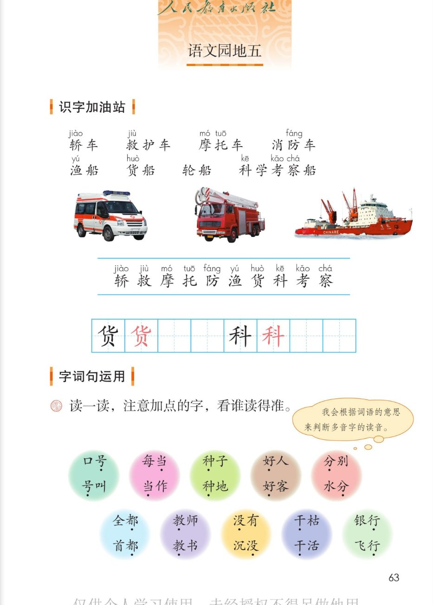
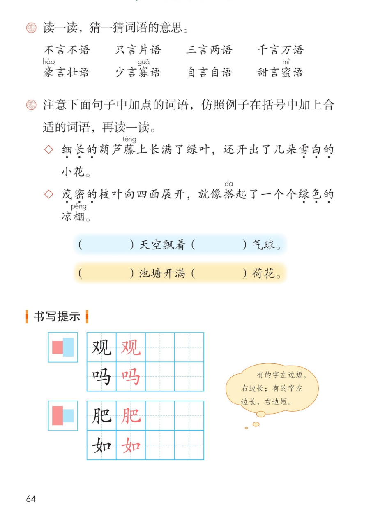
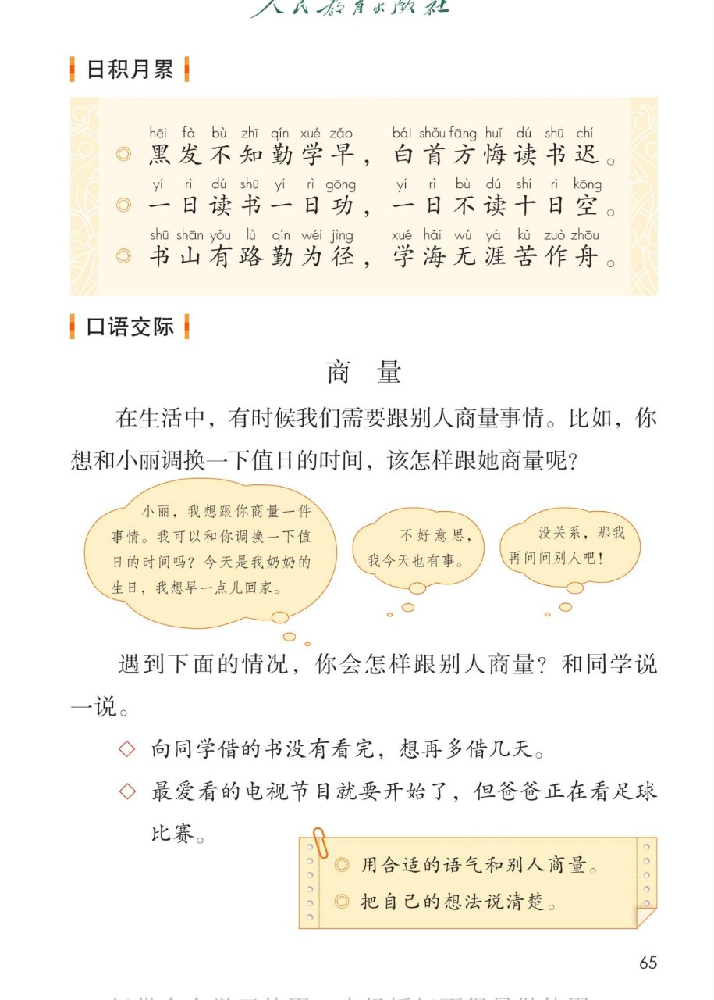
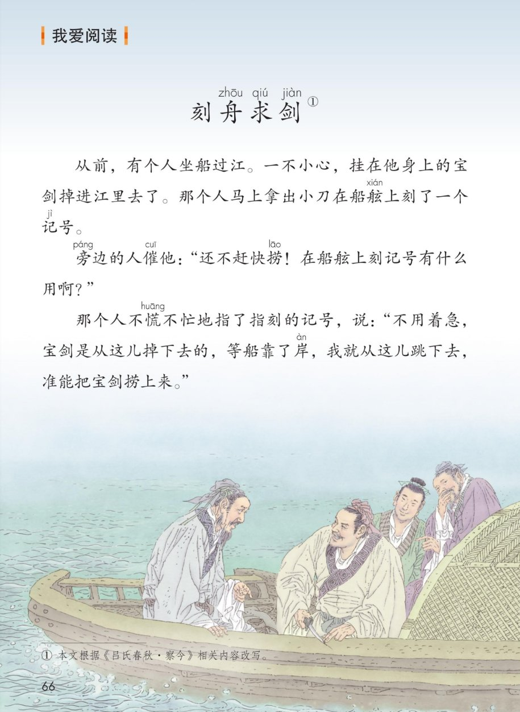

统编版 · 二年级上册 · 第五单元
第五单元 · 单元课件
语文园地五 · 车与船 · 多音字 · 言字词语 · 读书名言 · 商量 · 刻舟求剑
课本第 63~66 页，点哪句读哪句
交通识字 10 字
会写 2 字
多音字 10 组
言字词语 8 个
读书名言 3 句
故事 1 篇
闯关 8 题
这个单元学了什么：坐井观天、寒号鸟、我要的是葫芦——三篇寓言里都藏着一个道理。
语文园地五带大家认识车和船的名字，练一练多音字，读一读读书名言，再读寓言《刻舟求剑》。
点一下任一卡片或句子，就能听。
① 识字加油站 · 车与船
课本第 63 页
点词卡听读音，拼音按课本标注
本页要认的字 · 10 个
都藏在车名船名里，点字听读音
② 写字 · 货 科
课本第 63 页 · 田字格
点卡片听书写要点
③ 读一读，注意加点的字，看谁读得准
课本第 63 页
点词语听读音，字下有圆点的是多音字
课本气泡：我会根据词语的意思来判断多音字的读音。——先想意思，再定读音。
④ 读一读，猜一猜词语的意思
课本第 64 页
先点读、自己猜，再点卡片对一对意思
老师的话：八个词语里都藏着“言”字——“言”就是说话。想想：是谁在说？说了多少话？意思就猜出来了。
⑤ 仿照例子，在括号里加上合适的词语
课本第 64 页
例句点读，填空句点击揭晓参考答案
◇ 细长的葫芦藤上长满了绿叶，还开出了几朵雪白的小花。
例句告诉我们：加上“细长的”“雪白的”，事物一下子就活起来了。
茂密的枝叶向四面展开，就像搭起了一个个绿色的凉棚。
例句告诉我们：把枝叶比作凉棚，句子就变美了。
（ ）天空飘着（ ）气球。
（蓝蓝的）天空飘着（红红的）气球。
参考答案（不是唯一）：描写天空和气球的颜色、样子都行，比如“蓝蓝的”“高高飘着红红的”。
（ ）池塘开满（ ）荷花。
（清清的）池塘开满（粉红的）荷花。
参考答案（不是唯一）：清清的、圆圆的、美丽的……描写的词语要和池塘、荷花配得上。
老师的话：加上的词语要和后面的东西配得上——天空是蓝的，气球是红的，荷花是粉红的。
⑥ 书写提示 · 观 吗 肥 如
课本第 64 页
点卡片听左右宽窄的要点
课本气泡：有的字左边短，右边长；有的字左边长，右边短。
老师的话：观、吗是左短右长；肥、如是左长右短。动笔前先看清左右两边的宽窄。
⑦ 日积月累 · 读书名言
课本第 65 页
点哪句读哪句
黑发不知勤学早，白首方悔读书迟。
一日读书一日功，一日不读十日空。
书山有路勤为径，学海无涯苦作舟。
小知识（老师的话）：这三句都是劝人勤读书的名句。“黑发”指年轻的时候，“白首”指年老的时候——
趁着年轻要勤奋读书，等头发白了再后悔就来不及了。“书山有路勤为径，学海无涯苦作舟”
常用来勉励人刻苦学习：书山再高，勤奋是路；学海再大，吃苦是船。
⑧ 口语交际 · 商 量
课本第 65 页
点对话气泡听示例，再照着练一练
课本原题：在生活中，有时候我们需要跟别人商量事情。比如，你想和小丽调换一下值日的时间，该怎样跟她商量呢？
1
我 · 有礼貌地说出想法
小丽，我想跟你商量一件事情。我可以和你调换一下值日的时间吗？今天是我奶奶的生日，我想早一点儿回家。
2
小丽 · 不能答应也客气
不好意思，我今天也有事。
3
我 · 被拒绝也大大方方
没关系，那我再问问别人吧！
遇到下面的情况，你会怎样跟别人商量？
点情境卡，先自己说一说
◇ 向同学借的书没有看完，想再多借几天。
◇ 最爱看的电视节目就要开始了，但爸爸正在看足球比赛。
课本提示：① 用合适的语气和别人商量。② 把自己的想法说清楚。
⑨ 我爱阅读 · 刻舟求剑
课本第 66 页
点哪段读哪段，想想那个人错在哪里
刻舟求剑①
课本注释：① 本文根据《吕氏春秋·察今》相关内容改写。——船在往前走，宝剑却不会跟着船走，这就是那个人错的地方。
⑩ 单元闯关 · 8 题
点选项就判对错，答完自动算分
已经答 0 题，答对 0 题。
课本原页 · 第 63~66 页点图放大

第 63 页 · 识字加油站 · 多音字

第 64 页 · 言字词语 · 仿写 · 书写提示

第 65 页 · 读书名言 · 口语交际 商量

第 66 页 · 我爱阅读 刻舟求剑